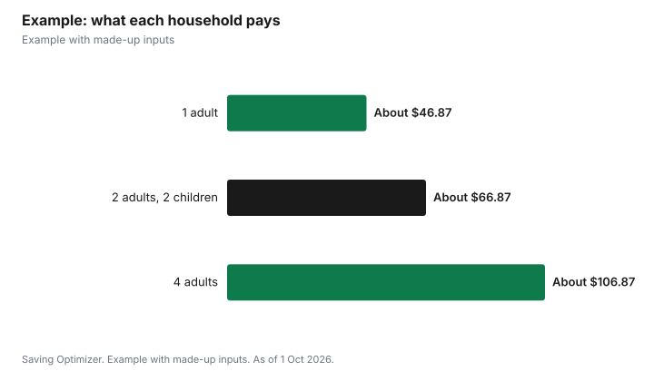

Events · Canada
Family Reunions in Canada: Venues, Food and Fair Cost-Splitting
A family reunion can cost very little if you choose a public park or community hall and split the costs fairly. In Toronto, a park picnic permit is $112.57 for up to 200 people, plus HST and an insurance fee, and a booking is required for any group over 25 or if you bring a barbecue. A community hall room can run about $70 an hour without alcohol. For a reunion in a national park, Parks Canada charges admission per vehicle for families: $24.50 a day at Banff for up to seven people in one car. The fairest split is usually per household for fixed costs like the venue, and per adult for food, with children free or reduced. Collect money early through a single organizer.
Key takeaways
- Toronto park picnic permit: $112.57 for up to 200 people, plus HST and insurance.
- Booking is required for groups over 25 or with a personal barbecue.
- Alcohol, food served to the public or amplified sound needs a special event booking in Toronto parks.
- Parks Canada family or group admission at Banff: $24.50 a day per vehicle.
- Split venue costs by household and food by adult; make children free or reduced.
- Example with made-up inputs: a 60-person reunion.
Venue options
| Venue | Sample cost | Notes |
|---|---|---|
| City park picnic site or shelter (Toronto) | $112.57 for up to 200 people, plus HST | Insurance $33.48 (1 to 25) or $65.88 (26 to 100) |
| Community centre room (Toronto example) | $70 an hour without alcohol; $104 with | Kitchen $38 an hour; after-hours fees |
| National park day trip (Banff) | $24.50 per vehicle per day for a family or group | Youth 17 and under free |
| Someone's home or cottage | Free venue | Host bears the work; no alcohol permit needed for invited guests at a home |
| Restaurant private room | May require a food and drink minimum | No permit; less flexibility |
Park rules worth knowing
Toronto requires a booking for park gatherings of more than 25 people or anyone bringing their own barbecue; smaller groups without a barbecue can simply show up, but without a reserved spot. A booking can cover designated picnic areas, picnic shelters, firepits and personal barbecues. The regular season runs May to September, and 2026 bookings opened on 13 February, so book shelters early for summer weekends. If your gathering involves selling or serving alcohol, serving food to the public or amplified sound, Toronto treats it as a special event, which has its own process. Other cities have similar systems, so search your municipality's parks booking page.
Alcohol
In Ontario, serving alcohol to invited guests at a private home does not need a permit. At a rented hall or a park, you need an AGCO special occasion permit, $50 a day for free drinks or $150 if guests pay, unless the venue's liquor licence covers you, plus whatever the venue or city requires. Keeping a daytime park reunion alcohol-free avoids the permit process entirely.
Splitting the costs fairly
Disagreements about money can sour a reunion, so set the method before anyone books. Three common approaches:
- Per household: split fixed costs, such as the venue, insurance and decorations, equally among households.
- Per adult: split food and drink by the number of adults; children free, or half price above a certain age.
- Sliding scale: suggested contribution with an option to pay more or less, for families with mixed incomes.
- Potluck: each household brings a dish, and the organizer covers the venue from a small fee per household.
Whatever you choose, publish the budget, collect money before booking, and use one organizer with a shared spreadsheet showing who has paid. Decide in advance what happens to leftover money, such as putting it toward the next reunion.
Travel and lodging
If relatives travel, the reunion's real cost is mostly travel and lodging, which each family pays for itself. Choosing a central location, giving several months' notice and suggesting a range of lodging, from camping to hotels, helps more relatives attend. For a reunion near a national park, a family or group Discovery Pass, $167.50 for up to seven people in one vehicle, may pay off if the family visits other national parks that year.
Activities that cost little
- A family history table with old photos, a printed family tree and a sign-up sheet for updated contact details.
- Lawn games, a scavenger hunt for children, or a softball game if the park has a diamond (check whether it needs its own booking).
- A group photo at a set time, announced in advance so everyone is there.
- A memory board or short round of stories about relatives who have died.
- A shared online album where everyone uploads photos afterward.
Name one person to run activities and one to handle food, so the organizer is not doing everything. Printed name tags with each person's branch of the family help younger relatives and in-laws connect, and cost almost nothing. A short welcome at the start, with the day's plan and where the washrooms and first aid kit are, keeps things running smoothly.
Food
For a park reunion, a potluck with an assigned main or a barbecue works well. Follow Health Canada's advice: keep food out of the 4°C to 60°C danger zone, and throw away cooked food left at room temperature for more than two hours. Bring coolers with ice for salads and a thermometer for meat.
Example with made-up inputs
These numbers are an example with made-up inputs. The Okafors plan a Saturday reunion for 60 people from 15 households, 45 adults and 15 children, at a Toronto park shelter. Fixed costs: $112.57 permit plus 13% HST, $127.20, insurance of $65.88, a made-up $150 for decorations, games and supplies, and $60 for a rented barbecue, totalling $403.08, or about $26.87 per household. Food and drinks: a made-up $900, or $20 per adult, children free. A household of two adults and two children pays about $66.87.
| Cost | Total | How split | Share |
|---|---|---|---|
| Permit with HST | $127.20 | Per household (15) | About $8.48 |
| Insurance | $65.88 | Per household | About $4.39 |
| Supplies and barbecue | $210 | Per household | $14 |
| Food and drinks | $900 | Per adult (45) | $20 each |

Steps
- Pick a date and send a save-the-date months ahead.
- Choose a venue and check booking rules.
- Agree on the split method and publish the budget.
- Collect money before booking.
- Assign food, games and setup jobs.
- Share a final accounting afterward.
Common mistakes
- Booking a park shelter too late.
- Bringing a barbecue to a park without a booking.
- Splitting everything per person when households differ in size.
- Letting one relative quietly cover the shortfall.
- Forgetting insurance or alcohol permits.
- Not having a rain plan, such as a covered shelter or a nearby hall on standby.
Related: renting a hall and car camping versus hotels.
Sources
- City of Toronto, One-Time Booking of Parks and Recreation Facilities (picnics, firepits and BBQs), toronto.ca, as of 1 Oct 2026.
- Ralph Thornton Community Centre, Rates - Updated for 2026, ralphthornton.org, as of 1 Oct 2026.
- Parks Canada, Banff National Park fees and Passes, permits and fees, parks.canada.ca, as of 1 Oct 2026.
- Alcohol and Gaming Commission of Ontario, Special occasion permits; Health Canada, Food safety tips for leftovers, as of 1 Oct 2026.
- Supplies, food and household amounts in the example are made-up inputs.
Frequently asked questions
Do I need a permit for a family reunion in a Toronto park?
Yes if more than 25 people attend or you bring your own barbecue. The permit is $112.57 for up to 200 people, plus HST.
How much is park event insurance in Toronto?
$33.48 for 1 to 25 people or $65.88 for 26 to 100 people.
Can we drink alcohol at a park reunion?
In Toronto, serving alcohol needs a special event booking, and in Ontario an AGCO permit, unless the location is licensed.
What is the fairest way to split reunion costs?
Many families split fixed costs per household and food per adult, with children free or reduced.
How much is Parks Canada admission for a family?
At Banff, $24.50 a day for a family or group of up to seven in one vehicle in 2026.
When should we book a park shelter?
Early. Toronto opened 2026 bookings on 13 February for the May to September season.
Researched and drafted with AI assistance and fact-checked against official Canadian sources. How we create content.
Disclosure: Saving Optimizer may earn a commission if a partner link is added later. No partnership is claimed on this page. Education only.